Hermanamiento Colonia Valdense - Luserna San Giovanni
Una visita de fraternidad
1, 2 y 5 de marzo de 2026
Celebramos la visita institucional y fraterna de la
delegación italiana a Colonia Valdense
El hermanamiento entre
Colonia Valdense, en Uruguay, y Luserna San
Giovanni, en Italia
constituye un vínculo histórico basado en las
raíces compartidas, cultura e identidad
valdense.
A casi tres décadas de la firma del acuerdo
entre ambas localidades, una delegación oficial
italiana visitó Colonia Valdense para participar
en una serie de actividades religiosas,
culturales e institucionales junto a autoridades
y vecinos.
Esta visita representa la reafirmación de los
lazos ancestrales que unen a nuestras
comunidades, celebrando una hermandad basada en
valores compartidos: fe, tradición y compromiso
comunitario.
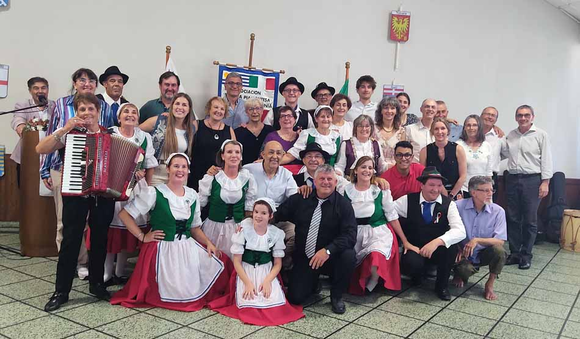
Actividades religiosas, culturales e institucionales
- 1 y 2 de marzo de 2026
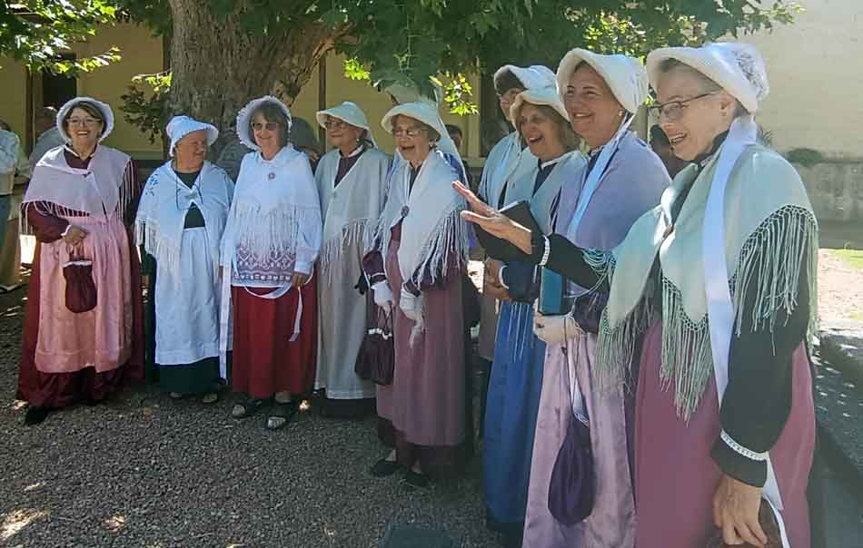
La jornada comenzó con un culto abierto a la
comunidad en la Iglesia Evangélica Valdense,
reuniendo vecinos y autoridades para dar la
bienvenida a la delegación italiana. Un
momento de significado espiritual y
cultural.
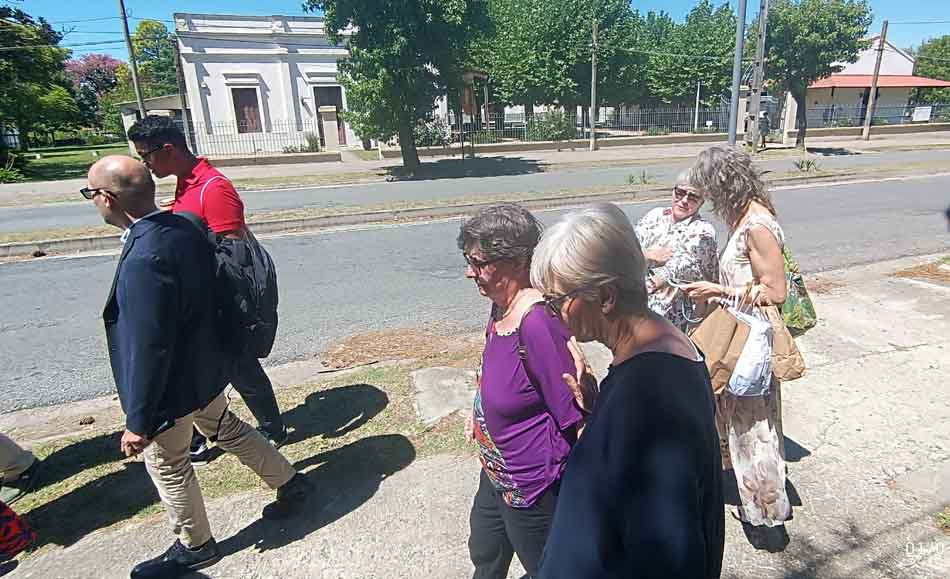
La delegación recorrió la ciudad visitando
espacios históricos y públicos de Colonia
Valdense, reconociendo la historia de la
inmigración y el legado cultural que forma
parte de la identidad local.
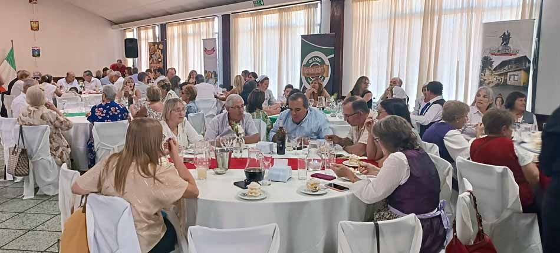
Un encuentro de bienvenida en el Club
Esparta donde vecinos, instituciones y
autoridades compartieron un espacio de
confraternidad cultural, fortaleciendo
vínculos entre ambas comunidades.
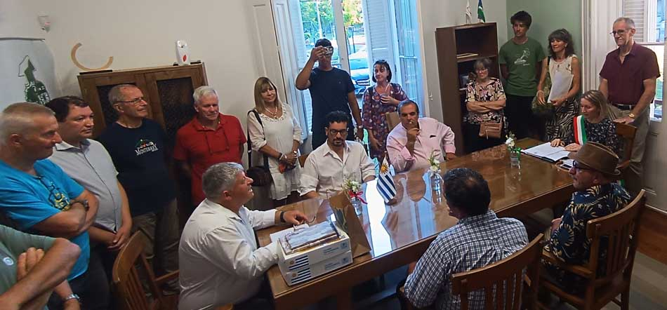
En el Municipio se realizó el acto oficial
de recibimiento donde se intercambiaron
obsequios y se comenzaron planes de
cooperación futura entre ambas localidades.
Actividades desarrolladas durante la visita
Culto Religioso
Caminata histórica
Almuerzo de
confraternidad
Acto protocolar
municipal
Encuentro institucional Dos comunidades unidas por raíces compartidas Uruguay 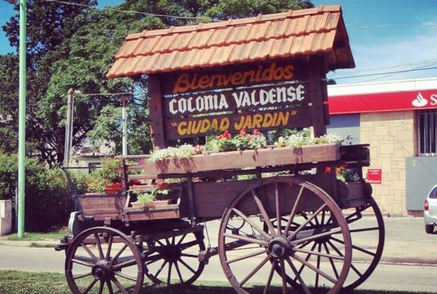
Comunidad histórica ubicada en el
Departamento de Colonia, Uruguay. Fundada
por colonos italianos piamonteses y
valdenses, representa un patrimonio vivo de
inmigración europea y fe evangélica.
Población: ~4,150
habitantes
Distancia: ~120km de
Montevideo
Italia 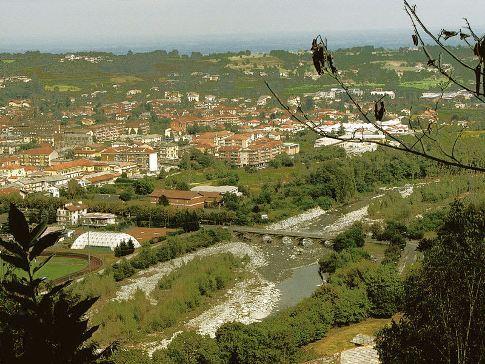
Pueblo histórico en la provincia de Turín,
Región de Piamonte. Centro de la tradición
valdense, conserva un patrimonio cultural
milenario y una comunidad de fe evangélica.
Población: ~7150 habitantes
Ubicación: Alpes
piamonteses
28 años de hermanamiento
Momentos capturados durante la visita de fraternidad
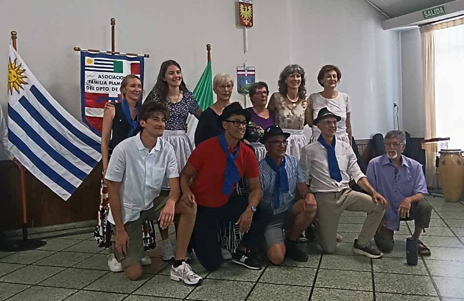 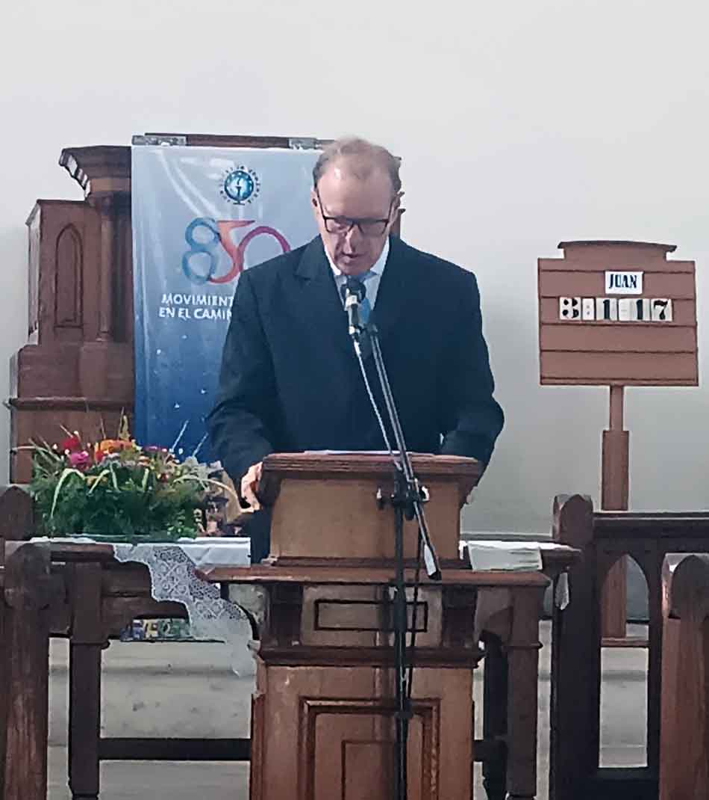 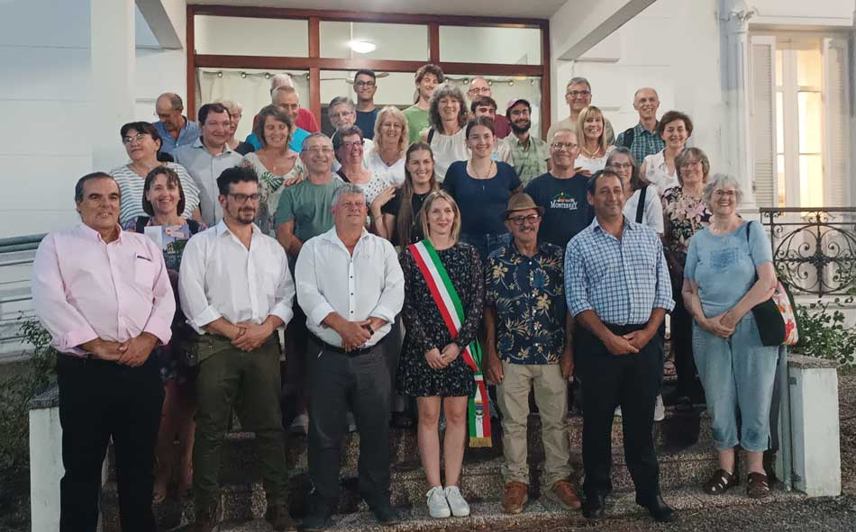 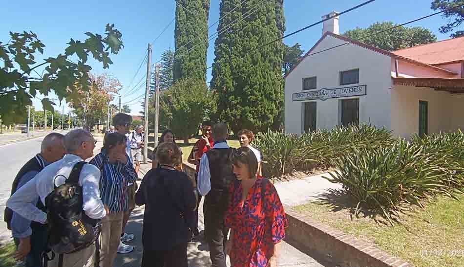 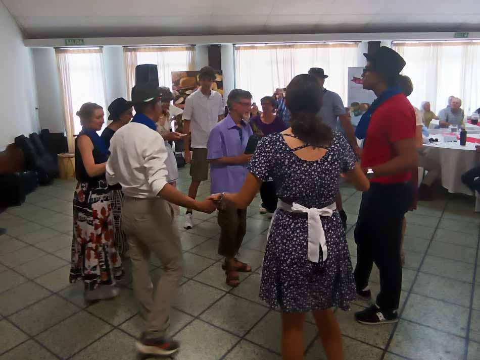 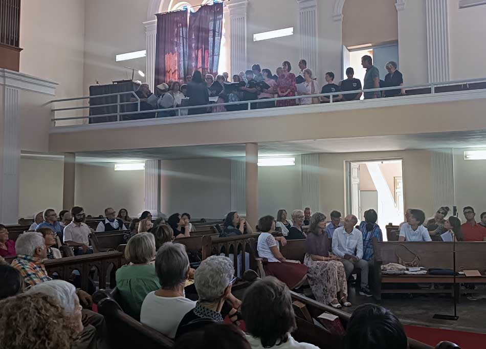 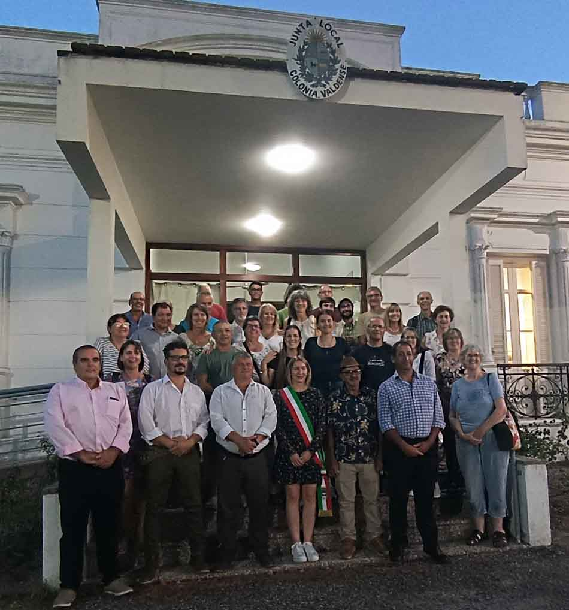 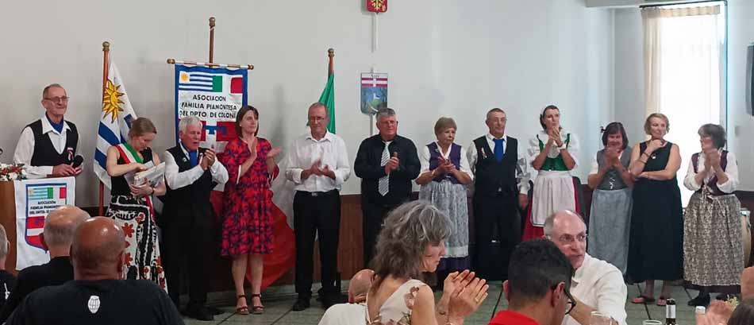Una conexión histórica de 28 años
Momentos del evento
Culto Religioso
Recorrido histórico
Almuerzo de confraternidad
Acto protocolar
Cronograma del evento
Domingo, 1 de marzo de 2026
Iglesia Evangélica Valdense. Ceremonia
religiosa abierta a la comunidad.
Recorrido desde el templo hasta espacios
históricos de Colonia Valdense.
Club Esparta. Encuentro de bienvenida con
autoridades y vecinos.
Lunes, 2 de marzo de 2026
Municipio de Colonia Valdense. Recibimiento
oficial con autoridades.
Jueves, 5 de marzo de 2026
Intendencia de Colonia. Reunión con
autoridades departamentales.
Ciudades hermanas
Colonia Valdense
Luserna San Giovanni
Desde 1998, ambas comunidades comparten un
compromiso de cooperación institucional y
hermandad fraterna
Galería de fotos